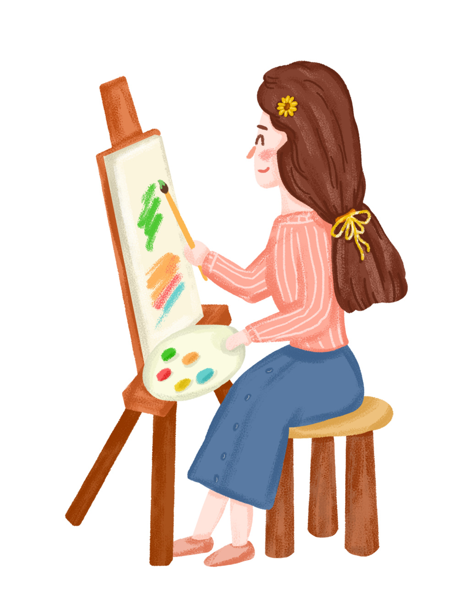

Hobby



Hai, Nama saya Yulia Reneldis Pritama biasa dipanggil Eldis. Asalku dari Kota Gresik. Saya salah satu mahasiswi prodi sistem informasi, Fakultas Teknik, Universitas Negeri Trunojoyo Madura. Masuk ke Universitas Negeri merupakan mimpi banyak orang bukan? Dan saya bersyukur.
Saya suka bernyayi, tidak jarang saya bernyanyi di banyak acara kampus terutama di acara yang prodi adakan. Saya juga sering mengikuti paduan suara baik di sekolah dan di gereja. Saya harap saya bisa lebih mengasah kemampuan bernyanyi saya agar bisa lebih membantu berkontribusi dalam hal apapapun.